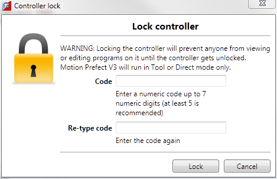
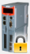
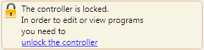
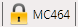
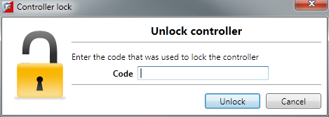

Locking the controller will prevent any unauthorised user from viewing or modifying the programs in memory, and also prevent Motion Perfect from connecting in Sync mode.
To Lock the currently connected controller, select "Controller / Lock Controller" from the main menu. For this to be available it must be enabled in the Options Dialog (“ General / Miscellaneous ” page) and Motion Perfect must be connected to the controller in Sync mode.

In the "Controller Lock" dialog, enter a numeric code (up to 7 digits) as a lock code. This value will be encoded by the system and used to lock the directory structure. The lock code is held in encrypted form in the flash memory of the controller.
If you forget the lock code there is no way to unlock the controller. You will need to return it to Trio or a distributor to have the lock removed.
When the controller is locked the controller icon in the "Controller Tree" will have a lock symbol overlaid on it,

a message will be shown at the bottom of the controller tree,

and the controller name in the "Status Bar" will have a lock symbol next to it.

To Unlock the currently connected controller, select "Controller / Unlock Controller" from the main menu (only available when the controller is locked).

Enter the lock code with which the controller was previously locked. After the lock code has been accepted full access to the contents of the controller will be restored.